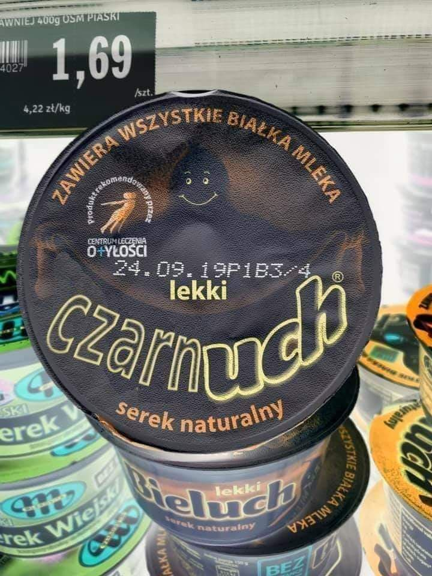

>>>>Menu pionowe<<<<
>>>>Kolumny<<<<
- Adam Małysz
- Mariusz Pudzianowski
- Robert Kubica
- Krzysztof Ibisz
- Krzysztof Krawczyk
- Stańczyk
- Bonus BGC
- Dąb Bartek
- Zawisza Czarny
- Jerzy Urban


Kaktus
Kaktusowate (Cactaceae Juss., zwyczajowo nazywane kaktusami) – rodzina sukulentów łodygowych (wieloletnich, zielnych lub częściowo zdrewniałych), należąca do rzędu goździkowców.
Malbork to popularne miasto w województwie pomorskim, malowniczo ulokowane nad rzeką Nogat, pomiędzy Tczewem i Elblągiem. Malbork zyskał sławę w szerokim świecie głównie dzięki potężnej twierdzy krzyżackiej, nie mającej w Polsce równej sobie.
Dzielnice miasta i ich zabytki
- Stare miasto
- Ratusz Staromiejski
- Brama Garncarska
- Centrum
- Urząd Pocztowy
- Wieża ciśnień